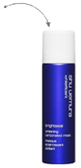
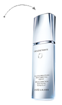

2、面部肤色比上臂内侧暗
3、肤色黯沉或不匀
4、有色斑或痘印烦恼
5、平时没有防晒习惯
7、运动不足
8、经常超过11点才入睡
9、城市污染接触机会多
10、嗜甜、嗜油腻、喝咖啡
看似不起眼的美白bug，却在悄悄让你的肌肤状态一路下滑。
SOS！肌底、表层，处处都是黑色素满溢的危机！
“美白雷区”全中！从这堂课起，即刻审视你的美白产品和护肤习惯！
雅诗兰黛晶透沁白淡斑精华露830元/ 30ml
美白是场昼夜无休的战争，而全新雅诗兰黛晶透沁白淡斑精华露，是能担当起这场持久战的绝对主力。夜间，它联袂法国海藻和黑糖蜜精华，针对黑色素源头密集修护、阻击未来斑；白天，天然黄岑苷精华能即时防护污染和日晒，断绝“补给”，让黑色素难以累积。美白功课与肌肤昼夜节律同步，不但帮你改善当下问题，更助你赢得净白未来。查看详情>
-

推荐最近大爱的一款好用又好玩的美白面膜——植村秀美白泡泡面膜。它借鉴了日本碳酸SPA护理的灵感，用 “碳酸概念”来促进肌肤微循环，为细胞提供氧气SPA，能帮“假面脸”打造出白里透红的好气色。挤适量泡泡在全脸，然后用手掌心捂住脸部，碳酸泡沫会噼里啪啦地在掌心弹开，之后再用沾满爽肤水的化妆棉擦拭就OK！详情>>
-

推荐最近大爱的一款好用又好玩的美白面膜——植村秀美白泡泡面膜。它借鉴了日本碳酸SPA护理的灵感，用 “碳酸概念”来促进肌肤微循环，为细胞提供氧气SPA，能帮“假面脸”打造出白里透红的好气色。挤适量泡泡在全脸，然后用手掌心捂住脸部，碳酸泡沫会噼里啪啦地在掌心弹开，之后再用沾满爽肤水的化妆棉擦拭就OK！详情>>
-
推荐最近大爱的一款好用又好玩的美白面膜——植村秀美白泡泡面膜。它借鉴了日本碳酸SPA护理的灵感，用 “碳酸概念”来促进肌肤微循环，为细胞提供氧气SPA，能帮“假面脸”打造出白里透红的好气色。挤适量泡泡在全脸，然后用手掌心捂住脸部，碳酸泡沫会噼里啪啦地在掌心弹开，之后再用沾满爽肤水的化妆棉擦拭就OK！详情>>

雅诗兰黛晶透沁白淡斑精华露
价值：248元
奖品数量：5套
活动时间:1月25日-2月10日